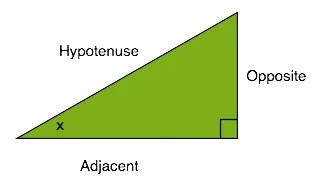
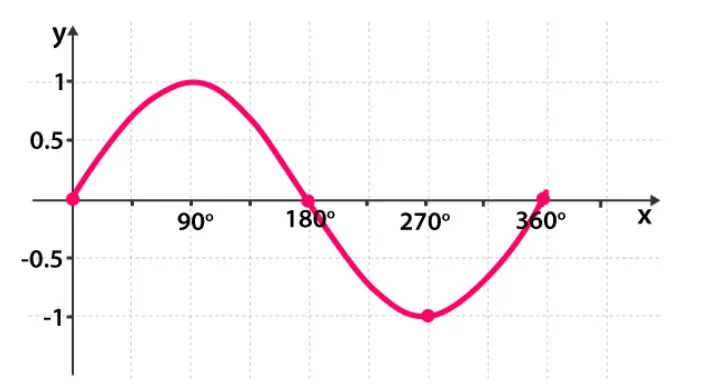
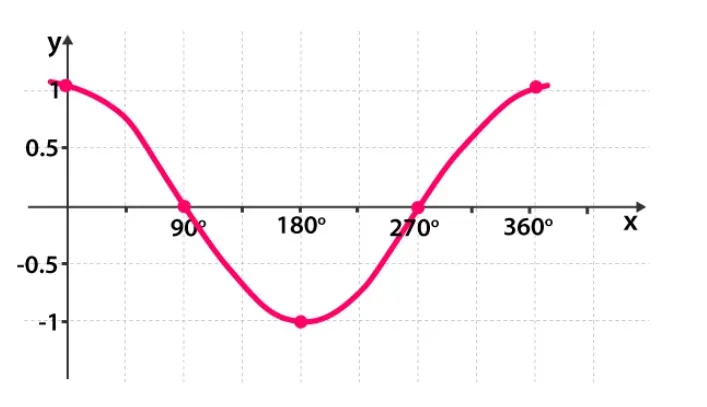
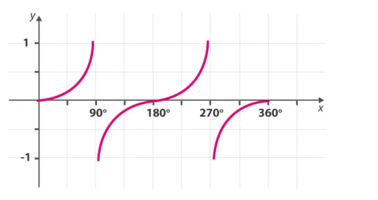

Trigonometric Ratios
\( \text{sin} = \frac{\text{Opposite side}}{\text{Hypotenuse}} \)
\( \text{cos} = \frac{\text{Adjacent side}}{\text{Hypotenuse}} \)
\( \text{tan} = \frac{\text{Opposite side}}{\text{Adjacent side}} \)
\( \text{cosec} = \frac{\text{Hypotenuse}}{\text{Opposite side}} \)
\( \text{sec} = \frac{\text{Hypotenuse}}{\text{Adjacent side}} \)
\( \text{cot} = \frac{\text{Adjacent side}}{\text{Opposite side}} \)
Trigonometric Indenties
\( \sin^2\theta + \cos^2\theta = 1 \)
\( \tan^2\theta + 1 = \sec^2\theta \)
\( \cot^2\theta + 1 = \csc^2\theta \)
\( \sin 2\theta = 2 \sin \theta \cos \theta \)
\( \cos 2\theta = \cos^2\theta - \sin^2\theta \)
\( \tan 2\theta = \frac{2 \tan \theta}{1 - \tan^2\theta} \)
\( \cot 2\theta = \frac{\cot^2\theta - 1}{2 \cot \theta} \)
| Quadrant I | Quadrant II | Quadrant III | Quadrant IV |
|---|---|---|---|
| \( \sin\left(\frac{\pi}{2} - \theta\right) = \cos \theta \) | \( \sin(\pi - \theta) = \cos \theta \) | \( \sin(\pi + \theta) = -\sin \theta \) | \( \sin(2\pi - \theta) = -\sin \theta \) |
| \( \cos\left(\frac{\pi}{2} - \theta\right) = \sin \theta \) | \( \cos(\pi - \theta) = -\cos \theta \) | \( \cos(\pi + \theta) = -\cos \theta \) | \( \cos(2\pi - \theta) = \cos \theta \) |
| \( \tan\left(\frac{\pi}{2} - \theta\right) = \cot \theta \) | \( \tan(\pi - \theta) = -\tan \theta \) | \( \tan(\pi + \theta) = \tan \theta \) | \( \tan(2\pi - \theta) = -\tan \theta \) |
| \( \cot\left(\frac{\pi}{2} - \theta\right) = \tan \theta \) | \( \cot(\pi - \theta) = -\cot \theta \) | \( \cot(\pi + \theta) = \cot \theta \) | \( \cot(2\pi - \theta) = -\cot \theta \) |
| \( \sec\left(\frac{\pi}{2} - \theta\right) = \csc \theta \) | \( \sec(\pi - \theta) = -\sec \theta \) | \( \sec(\pi + \theta) = -\sec \theta \) | \( \sec(2\pi - \theta) = \sec \theta \) |
| \( \csc\left(\frac{\pi}{2} - \theta\right) = \sec \theta \) | \( \csc(\pi - \theta) = \csc \theta \) | \( \csc(\pi + \theta) = -\csc \theta \) | \( \csc(2\pi - \theta) = -\csc \theta \) |
Domain and Range of function
\( \text{sin} : \mathbb{R} \rightarrow [-1, 1] \)
\( \text{cos} : \mathbb{R} \rightarrow [-1, 1] \)
\( \text{tan} : \mathbb{R} - \{ x : x = (2n + 1) \frac{\pi}{2}, n \in \mathbb{Z} \} \rightarrow \mathbb{R} \)
\( \text{cot} : \mathbb{R} - \{ x : x = n\pi, n \in \mathbb{Z} \} \rightarrow \mathbb{R} \)
\( \text{sec} : \mathbb{R} - \{ x : x = (2n + 1) \frac{\pi}{2}, n \in \mathbb{Z} \} \rightarrow \mathbb{R} - (-1, 1) \)
\( \text{csc} : \mathbb{R} - \{ x : x = n\pi, n \in \mathbb{Z} \} \rightarrow \mathbb{R} - (-1, 1) \)
Graphs of Basic Trigonometry function
- sin function
 - cos function
 - tan function

Reciprocal Identities
\( \csc \theta = \frac{1}{\sin \theta} \)
\( \sec \theta = \frac{1}{\cos \theta} \)
\( \cot \theta = \frac{1}{\tan \theta} \)
\( \sin \theta = \frac{1}{\csc \theta} \)
\( \cos \theta = \frac{1}{\sec \theta} \)
\( \tan \theta = \frac{1}{\cot \theta} \)
Sine and Cosine Laws
If A, B and C are angles and a, b and c are the sides of a triangle, then,
\( \frac{a}{\sin A} = \frac{b}{\sin B} = \frac{c}{\sin C} \)
\( c^2 = a^2 + b^2 - 2ab \cdot \cos C \)
\( a^2 = b^2 + c^2 - 2bc \cdot \cos A \)
\( b^2 = a^2 + c^2 - 2ac \cdot \cos B \)
Basic Trigonometric sum and difference Identies
For angles u and v, we have the following relationships:
\( \sin(u + v) = \sin(u) \cdot \cos(v) + \cos(u) \cdot \sin(v) \)
\( \cos(u + v) = \cos(u) \cdot \cos(v) - \sin(u) \cdot \sin(v) \)
\( \tan(u+v) = \frac{\tan(u) + \tan(v)}{1 - \tan(u) \cdot \tan(v)} \)
\( \sin(u - v) = \sin(u) \cdot \cos(v) - \cos(u) \cdot \sin(v) \)
\( \cos(u - v) = \cos(u) \cdot \cos(v) + \sin(u) \cdot \sin(v) \)
\( \tan(u-v) = \frac{\tan(u) - \tan(v)}{1 + \tan(u) \cdot \tan(v)} \)
Periodicity Identities (in Radians)
These formulas are used to shift the angles by \( \frac{\pi}{2} \), \( \pi \), \( 2\pi \), etc. :
\( \sin(\frac{\pi}{2} - A) = \cos A , \cos(\frac{\pi}{2} - A) = \sin A\)
\( \sin(\frac{\pi}{2} + A) = \cos A , \cos(\frac{\pi}{2} + A) = -\sin A\)
\( \sin(\frac{3\pi}{2} - A) = -\cos A , \cos(\frac{3\pi}{2} - A) = -\sin A\)
\( \sin(\frac{3\pi}{2} + A) = -\cos A , \cos(\frac{3\pi}{2} + A) = \sin A\)
\( \sin(\pi - A) = \sin A , \cos(\pi - A) = -\cos A\)
\( \sin(\pi + A) = -\sin A , \cos(\pi + A) = -\cos A\)
\( \sin(2\pi - A) = -\sin A , \cos(2\pi - A) = \cos A\)
\( \sin(2\pi + A) = \sin A , \cos(2\pi + A) = \cos A\)
Periodicity Identities (in Degrees)
\( \sin(90°−x) = \cos x\)
\( \cos(90°−x) = \sin x\)
\( \tan(90°−x) = \cot x\)
\( \cot(90°−x) = \tan x\)
\( \sec(90°−x) = \csc x\)
\( \csc(90°−x) = \sec x\)
Sign of Trigonometric Functions
| Quadrants | I | II | III | IV |
|---|---|---|---|---|
| sin θ | +ve | +ve | -ve | -ve |
| cos θ | +ve | -ve | -ve | +ve |
| tan θ | +ve | -ve | +ve | -ve |
| cosec θ | +ve | +ve | -ve | -ve |
| sec θ | +ve | -ve | -ve | +ve |
| cot θ | +ve | -ve | +ve | -ve |
\( \sin(-\theta) = -\sin \theta \)
\( \cos(-\theta) = \cos \theta \)
\( \tan(-\theta) = -\tan \theta \)
\( \cot(-\theta) = -\cot \theta \)
\( \sec(-\theta) = \sec \theta \)
\( \cosec(-\theta) = -\cosec \theta \)
Double Angle Identities
\( \sin(2x) = 2\sin(x) \cdot \cos(x) = \frac{2\tan x}{1+\tan^2 x} \)
\( \cos(2x) = \cos^2(x) - \sin^2(x) = \frac{1-\tan^2 x}{1+\tan^2 x} \)
\( \cos(2x) = 2\cos^2(x)-1 = 1-2\sin^2(x) \)
\( \tan(2x) = \frac{2\tan(x)}{1-\tan^2(x)} \)
\( \sec(2x) = \frac{\sec^2 x}{2-\sec^2 x} \)
\( \csc(2x) = \frac{\sec x \cdot \csc x}{2} \)
Triple Angle Identities
\( \sin 3x = 3\sin x - 4\sin^3 x \)
\( \cos 3x = 4\cos^3 x - 3\cos x \)
\( \tan 3x = \frac{3\tan x - \tan^3 x}{1-3\tan^2 x} \)
\( \cot 3x = \frac{\cot^3 x - 3\cot x}{3\cot^2 x - 1} \)
Half Angle Identities :
\( \sin\frac{x}{2} = \pm\sqrt{\frac{1-\cos x}{2}} \)
\( \cos\frac{x}{2} = \pm\sqrt{\frac{1+\cos x}{2}} \)
\( \tan\frac{x}{2} = \pm\sqrt{\frac{1-\cos x}{1+\cos x}} \)
Product Identities
\( \sin x \cdot \cos y = \frac{\sin(x+y)+\sin(x-y)}{2} \)
\( \cos x \cdot \cos y = \frac{\cos(x+y)+\cos(x-y)}{2} \)
\( \sin x \cdot \sin y = \frac{\cos(x-y)-\cos(x+y)}{2} \)
Sum to Product Identities
\( \sin x + \sin y = 2\sin\left(\frac{x+y}{2}\right) \cdot \cos\left(\frac{x-y}{2}\right) \)
\( \sin x - \sin y = 2\cos\left(\frac{x+y}{2}\right) \cdot \sin\left(\frac{x-y}{2}\right) \)
\( \cos x + \cos y = 2\cos\left(\frac{x+y}{2}\right) \cdot \cos\left(\frac{x-y}{2}\right) \)
\( \cos x - \cos y = -2\sin\left(\frac{x+y}{2}\right) \cdot \sin\left(\frac{x-y}{2}\right) \)
Inverse Trigonometry Formulas
\( \sin^{-1}\left(\frac{1}{a}\right) = \csc^{-1}(a) \), \( a \geq 1 \) or \( a \leq -1 \)
\( \cos^{-1}\left(\frac{1}{a}\right) = \sec^{-1}(a) \), \( a \geq 1 \) or \( a \leq -1 \)
\( \tan^{-1}\left(\frac{1}{a}\right) = \cot^{-1}(a) \), \( a > 0 \)
\( \sin^{-1}(-a) = -\sin^{-1}(a) \), \( a \in [-1, 1] \)
\( \tan^{-1}(-a) = -\tan^{-1}(a) \), \( a \in \mathbb{R} \)
\( \csc^{-1}(-a) = -\csc^{-1}(a) \), \( |a| \geq 1 \)
\( \cos^{-1}(-a) = \pi - \cos^{-1}(a) \), \( a \in [-1, 1] \)
\( \sec^{-1}(-a) = \pi - \sec^{-1}(a) \), \( |a| \geq 1 \)
\( \cot^{-1}(-a) = \pi - \cot^{-1}(a) \), \( a \in \mathbb{R} \)
Addition Properties
\( \sin^{-1}a + \cos^{-1}a = \frac{\pi}{2} \), \( a \in [-1, 1] \)
\( \tan^{-1}a + \cot^{-1}a = \frac{\pi}{2} \), \( a \in \mathbb{R} \)
\( \csc^{-1}a + \sec^{-1}a = \frac{\pi}{2} \), \( |a| \geq 1 \)
\( \tan^{-1}a + \tan^{-1}b = \tan^{-1} \left( \frac{a+b}{1-ab} \right) \), \( ab<1 \)
\( \tan^{-1}a - \tan^{-1}b = \tan^{-1} \left( \frac{a-b}{1+ab} \right) \), \( ab>-1 \)
\( \tan^{-1}a - \tan^{-1}b = \pi + \tan^{-1} \left( \frac{a+b}{1-ab} \right) \), \( ab > 1 \); \( a,b > 0 \)
Twice of Inverse of tan Function
\( 2\tan^{-1}a = \sin^{-1} \left( \frac{2a}{1+a^2} \right) \), \( |a| \leq 1 \)
\( 2\tan^{-1}a = \cos^{-1} \left( \frac{1-a^2}{1+a^2} \right) \), \( a \geq 0 \)
\( 2\tan^{-1}a = \tan^{-1} \left( \frac{2a}{1+a^2} \right) \), \( -1 < a < 1 \)
Inverse Trigonometry Substitution
| Expression | Substitution | Identity |
|---|---|---|
| √(a² - x²) | x = a sin θ | 1 - sin²θ = cos²θ |
| √(a² + x²) | x = a tan θ | 1 - tan²θ = sec²θ |
| √(x² - a²) | x = a sec θ | sec²θ - 1 = tan²θ |
Complementary Ratios